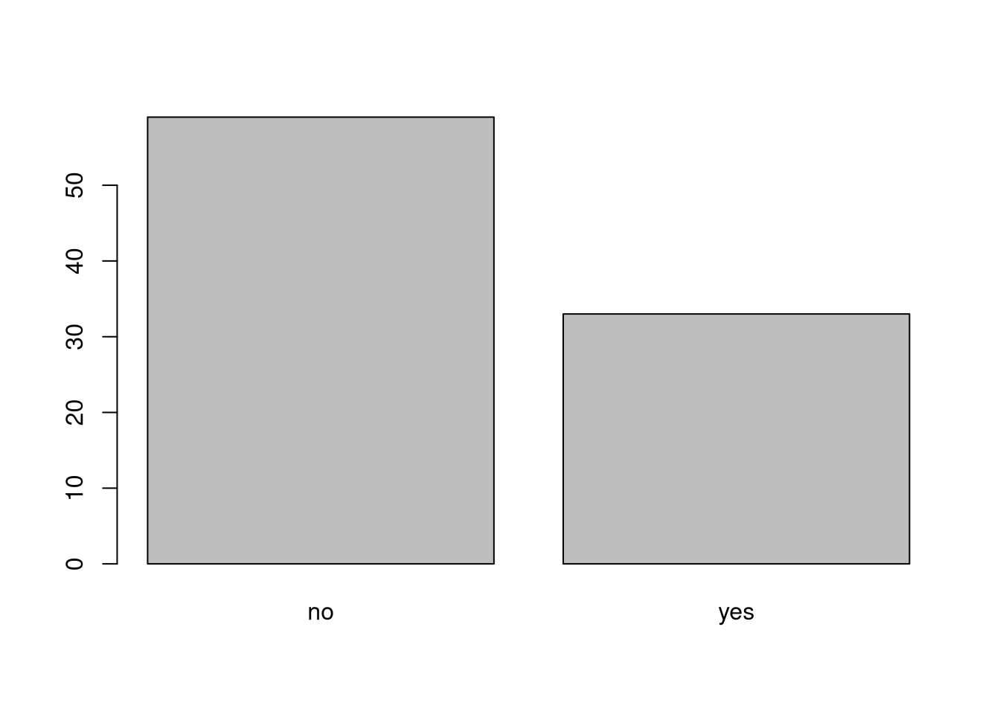
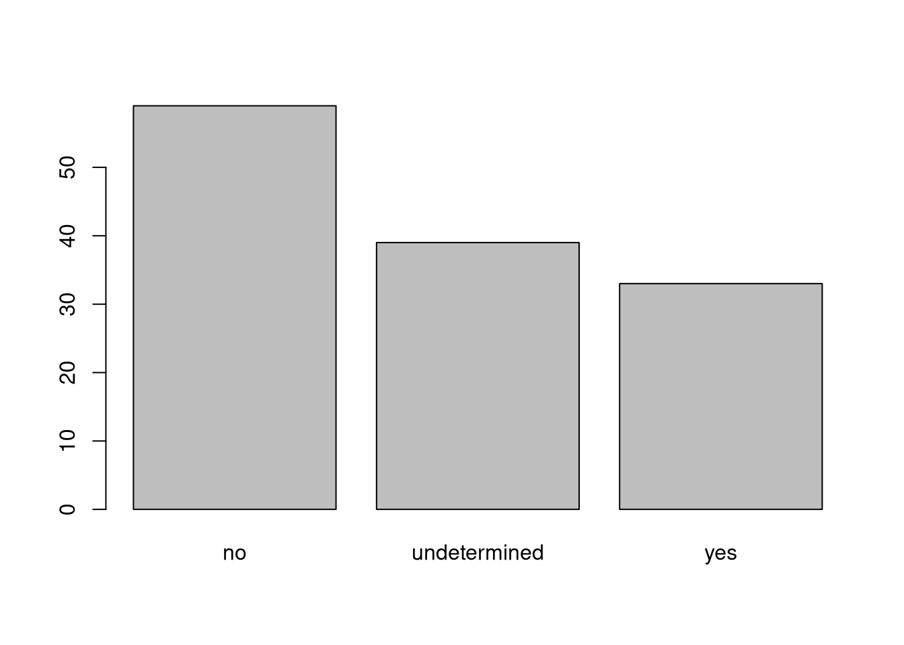
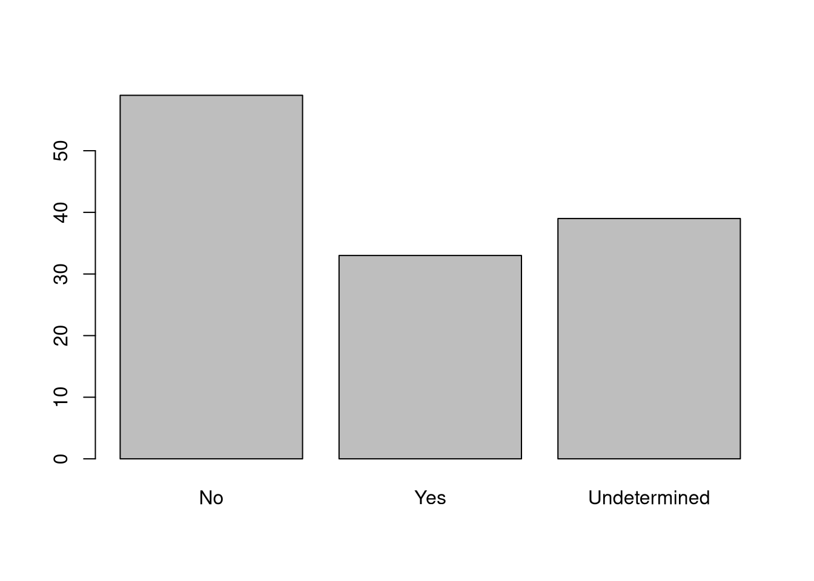

3 Starting with Data
The two main goals for this lessons are:
- To make sure that learners are comfortable with working with data frames, and can use the bracket notation to select slices/columns.
- To expose learners to factors. Their behavior is not necessarily intuitive, and so it is important that they are guided through it the first time they are exposed to it. The content of the lesson should be enough for learners to avoid common mistakes with them.
- Describe what a data frame is.
- Load external data from a .csv file into a data frame.
- Summarize the contents of a data frame.
- Subset values from data frames.
- Describe the difference between a factor and a string.
- Convert between strings and factors.
- Reorder and rename factors.
- Change how character strings are handled in a data frame.
- Examine and change date formats.
- What is a data.frame?
- How can I read a complete csv file into R?
- How can I get basic summary information about my dataset?
- How can I change the way R treats strings in my dataset?
- Why would I want strings to be treated differently?
- How are dates represented in R and how can I change the format?
3.1 What are data frames?
Data frames are the de facto data structure for tabular data in R, and what we use for data processing, statistics, and plotting.
A data frame is the representation of data in the format of a table where the columns are vectors that all have the same length. Data frames are analogous to the more familiar spreadsheet in programs such as Excel, with one key difference. Because columns are vectors, each column must contain a single type of data (e.g., characters, integers, factors). For example, here is a figure depicting a data frame comprising a numeric, a character, and a logical vector.

Data frames can be created by hand, but most commonly they are generated by the functions read_csv() or read_table(); in other words, when importing spreadsheets from your hard drive (or the web). We will now demonstrate how to import tabular data using read_csv().
3.2 Presentation of the SAFI Data
SAFI (Studying African Farmer-Led Irrigation) is a study looking at farming and irrigation methods in Tanzania and Mozambique. The survey data was collected through interviews conducted between November 2016 and June 2017. For this lesson, we will be using a subset of the available data. For information about the full teaching dataset used in other lessons in this workshop, see the dataset description.
We will be using a subset of the cleaned version of the dataset that was produced through cleaning in OpenRefine (data/SAFI_clean.csv). In this dataset, the missing data is encoded as “NULL”, each row holds information for a single interview respondent, and the columns represent:
| column_name | description |
|---|---|
| key_id | Added to provide a unique Id for each observation. (The InstanceID field does this as well but it is not as convenient to use) |
| village | Village name |
| interview_date | Date of interview |
| no_membrs | How many members in the household? |
| years_liv | How many years have you been living in this village or neighboring village? |
| respondent_wall_type | What type of walls does their house have (from list) |
| rooms | How many rooms in the main house are used for sleeping? |
| memb_assoc | Are you a member of an irrigation association? |
| affect_conflicts | Have you been affected by conflicts with other irrigators in the area? |
| liv_count | Number of livestock owned. |
| items_owned | Which of the following items are owned by the household? (list) |
| no_meals | How many meals do people in your household normally eat in a day? |
| months_lack_food | Indicate which months, In the last 12 months have you faced a situation when you did not have enough food to feed the household? |
| instanceID | Unique identifier for the form data submission |
3.3 Importing data
You are going to load the data in R’s memory using the function read_csv() from the readr package, which is part of the tidyverse; learn more about the tidyverse collection of packages here. readr gets installed as part as the tidyverse installation. When you load the tidyverse (library(tidyverse)), the core packages (the packages used in most data analyses) get loaded, including readr.
Before proceeding, however, this is a good opportunity to talk about conflicts. Certain packages we load can end up introducing function names that are already in use by pre-loaded R packages. For instance, when we load the tidyverse package below, we will introduce two conflicting functions: filter() and lag(). This happens because filter and lag are already functions used by the stats package (already pre-loaded in R). What will happen now is that if we, for example, call the filter() function, R will use the dplyr::filter() version and not the stats::filter() one. This happens because, if conflicted, by default R uses the function from the most recently loaded package. Conflicted functions may cause you some trouble in the future, so it is important that we are aware of them so that we can properly handle them, if we want.
To do so, we just need the following functions from the conflicted package:
conflicted::conflict_scout(): Shows us any conflicted functions.
conflict_prefer("function", "package_prefered"): Allows us to choose the default function we want from now on.
It is also important to know that we can, at any time, just call the function directly from the package we want, such as stats::filter().
Even with the use of an RStudio project, it can be difficult to learn how to specify paths to file locations. Enter the here package! The here package creates paths relative to the top-level directory (your RStudio project). These relative paths work regardless of where the associated source file lives inside your project, like analysis projects with data and reports in different subdirectories. This is an important contrast to using setwd(), which depends on the way you order your files on your computer.
Before we can use the read_csv() and here() functions, we need to load the tidyverse and here packages.
Also, if you recall, the missing data is encoded as “NULL” in the dataset. We’ll tell it to the function, so R will automatically convert all the “NULL” entries in the dataset into NA.
library(tidyverse)
library(here)
interviews <- read_csv(
here("data", "SAFI_clean.csv"),
na = "NULL")In the above code, we notice the here() function takes folder and file names as inputs (e.g., "data", "SAFI_clean.csv"), each enclosed in quotations ("") and separated by a comma. The here() will accept as many names as are necessary to navigate to a particular file (e.g., here("analysis", "data", "surveys", "clean", "SAFI_clean.csv)).
The here() function can accept the folder and file names in an alternate format, using a slash (“/”) rather than commas to separate the names. The two methods are equivalent, so that here("data", "SAFI_clean.csv") and here("data/SAFI_clean.csv") produce the same result. (The slash is used on all operating systems; backslashes are not used.)
If you were to type in the code above, it is likely that the read.csv() function would appear in the automatically populated list of functions. This function is different from the read_csv() function, as it is included in the “base” packages that come pre-installed with R. Overall, read.csv() behaves similar to read_csv(), with a few notable differences. First, read.csv() coerces column names with spaces and/or special characters to different names (e.g. interview date becomes interview.date). Second, read.csv() stores data as a data.frame, where read_csv() stores data as a different kind of data frame called a tibble. We prefer tibbles because they have nice printing properties among other desirable qualities. Read more about tibbles here.
The second statement in the code above creates a data frame but doesn’t output any data because, as you might recall, assignments (<-) don’t display anything. (Note, however, that read_csv may show informational text about the data frame that is created.) If we want to check that our data has been loaded, we can see the contents of the data frame by typing its name: interviews in the console.
interviews
## Try also
## view(interviews)
## head(interviews)# A tibble: 131 × 14
key_ID village interview_date no_membrs years_liv respondent_wall_type
<dbl> <chr> <dttm> <dbl> <dbl> <chr>
1 1 God 2016-11-17 00:00:00 3 4 muddaub
2 2 God 2016-11-17 00:00:00 7 9 muddaub
3 3 God 2016-11-17 00:00:00 10 15 burntbricks
4 4 God 2016-11-17 00:00:00 7 6 burntbricks
5 5 God 2016-11-17 00:00:00 7 40 burntbricks
6 6 God 2016-11-17 00:00:00 3 3 muddaub
7 7 God 2016-11-17 00:00:00 6 38 muddaub
8 8 Chirodzo 2016-11-16 00:00:00 12 70 burntbricks
9 9 Chirodzo 2016-11-16 00:00:00 8 6 burntbricks
10 10 Chirodzo 2016-12-16 00:00:00 12 23 burntbricks
# ℹ 121 more rows
# ℹ 8 more variables: rooms <dbl>, memb_assoc <chr>, affect_conflicts <chr>,
# liv_count <dbl>, items_owned <chr>, no_meals <dbl>, months_lack_food <chr>,
# instanceID <chr>Note that read_csv() actually loads the data as a tibble. A tibble is an extension of R data frames used by the tidyverse. When the data is read using read_csv(), it is stored in an object of class tbl_df, tbl, and data.frame. You can see the class of an object with
class(interviews)[1] "spec_tbl_df" "tbl_df" "tbl" "data.frame" As a tibble, the type of data included in each column is listed in an abbreviated fashion below the column names. For instance, here key_ID is a column of floating point numbers (abbreviated <dbl> for the word ‘double’), village is a column of characters (<chr>) and the interview_date is a column in the “date and time” format (<dttm>).
3.4 Inspecting data frames
When calling a tbl_df object (like interviews here), there is already a lot of information about our data frame being displayed such as the number of rows, the number of columns, the names of the columns, and as we just saw the class of data stored in each column. However, there are functions to extract this information from data frames. Here is a non-exhaustive list of some of these functions. Let’s try them out!
Size:
dim(interviews)- returns a vector with the number of rows as the first element, and the number of columns as the second element (the dimensions of the object)nrow(interviews)- returns the number of rowsncol(interviews)- returns the number of columns
Content:
head(interviews)- shows the first 6 rowstail(interviews)- shows the last 6 rows
Names:
names(interviews)- returns the column names (synonym ofcolnames()fordata.frameobjects)
Summary:
str(interviews)- structure of the object and information about the class, length and content of each columnsummary(interviews)- summary statistics for each columnglimpse(interviews)- returns the number of columns and rows of the tibble, the names and class of each column, and previews as many values will fit on the screen. Unlike the other inspecting functions listed above,glimpse()is not a “base R” function so you need to have thedplyrortibblepackages loaded to be able to execute it.
Note: most of these functions are “generic.” They can be used on other types of objects besides data frames or tibbles.
3.5 Subsetting data frames
Our interviews data frame has rows and columns (it has 2 dimensions). In practice, we may not need the entire data frame; for instance, we may only be interested in a subset of the observations (the rows) or a particular set of variables (the columns). If we want to access some specific data from it, we need to specify the “coordinates” (i.e., indices) we want from it. Row numbers come first, followed by column numbers.
## first element in the first column of the tibble
interviews[1, 1]# A tibble: 1 × 1
key_ID
<dbl>
1 1## first element in the 6th column of the tibble
interviews[1, 6]# A tibble: 1 × 1
respondent_wall_type
<chr>
1 muddaub ## first column of the tibble (as a vector)
interviews[[1]] [1] 1 2 3 4 5 6 7 8 9 10 11 12 13 14 15 16 17 18
[19] 19 20 21 22 23 24 25 26 27 28 29 30 31 32 33 34 35 36
[37] 37 38 39 40 41 42 43 44 45 46 47 48 49 50 51 52 53 54
[55] 55 56 57 58 59 60 61 62 63 64 65 66 67 68 69 70 71 127
[73] 133 152 153 155 178 177 180 181 182 186 187 195 196 197 198 201 202 72
[91] 73 76 83 85 89 101 103 102 78 80 104 105 106 109 110 113 118 125
[109] 119 115 108 116 117 144 143 150 159 160 165 166 167 174 175 189 191 192
[127] 126 193 194 199 200## first column of the tibble
interviews[1]# A tibble: 131 × 1
key_ID
<dbl>
1 1
2 2
3 3
4 4
5 5
6 6
7 7
8 8
9 9
10 10
# ℹ 121 more rows## first three elements in the 7th column of the tibble
interviews[1:3, 7]# A tibble: 3 × 1
rooms
<dbl>
1 1
2 1
3 1## the 3rd row of the tibble
interviews[3, ]# A tibble: 1 × 14
key_ID village interview_date no_membrs years_liv respondent_wall_type
<dbl> <chr> <dttm> <dbl> <dbl> <chr>
1 3 God 2016-11-17 00:00:00 10 15 burntbricks
# ℹ 8 more variables: rooms <dbl>, memb_assoc <chr>, affect_conflicts <chr>,
# liv_count <dbl>, items_owned <chr>, no_meals <dbl>, months_lack_food <chr>,
# instanceID <chr>## equivalent to head_interviews <- head(interviews)
head_interviews <- interviews[1:6, ]: is a special function that creates numeric vectors of integers in increasing or decreasing order, test 1:10 and 10:1 for instance.
You can also exclude certain indices of a data frame using the “-” sign:
interviews[, -1] # The whole tibble, except the first column# A tibble: 131 × 13
village interview_date no_membrs years_liv respondent_wall_type rooms
<chr> <dttm> <dbl> <dbl> <chr> <dbl>
1 God 2016-11-17 00:00:00 3 4 muddaub 1
2 God 2016-11-17 00:00:00 7 9 muddaub 1
3 God 2016-11-17 00:00:00 10 15 burntbricks 1
4 God 2016-11-17 00:00:00 7 6 burntbricks 1
5 God 2016-11-17 00:00:00 7 40 burntbricks 1
6 God 2016-11-17 00:00:00 3 3 muddaub 1
7 God 2016-11-17 00:00:00 6 38 muddaub 1
8 Chirodzo 2016-11-16 00:00:00 12 70 burntbricks 3
9 Chirodzo 2016-11-16 00:00:00 8 6 burntbricks 1
10 Chirodzo 2016-12-16 00:00:00 12 23 burntbricks 5
# ℹ 121 more rows
# ℹ 7 more variables: memb_assoc <chr>, affect_conflicts <chr>,
# liv_count <dbl>, items_owned <chr>, no_meals <dbl>, months_lack_food <chr>,
# instanceID <chr>interviews[-c(7:131), ] # Equivalent to head(interviews)# A tibble: 6 × 14
key_ID village interview_date no_membrs years_liv respondent_wall_type
<dbl> <chr> <dttm> <dbl> <dbl> <chr>
1 1 God 2016-11-17 00:00:00 3 4 muddaub
2 2 God 2016-11-17 00:00:00 7 9 muddaub
3 3 God 2016-11-17 00:00:00 10 15 burntbricks
4 4 God 2016-11-17 00:00:00 7 6 burntbricks
5 5 God 2016-11-17 00:00:00 7 40 burntbricks
6 6 God 2016-11-17 00:00:00 3 3 muddaub
# ℹ 8 more variables: rooms <dbl>, memb_assoc <chr>, affect_conflicts <chr>,
# liv_count <dbl>, items_owned <chr>, no_meals <dbl>, months_lack_food <chr>,
# instanceID <chr>tibbles can be subset by calling indices (as shown previously), but also by calling their column names directly:
interviews["village"] # Result is a tibble
interviews[, "village"] # Result is a tibble
interviews[["village"]] # Result is a vector
interviews$village # Result is a vectorIn RStudio, you can use the autocompletion feature to get the full and correct names of the columns.
3.6 Exercise
- Create a tibble (
interviews_100) containing only the data in row 100 of theinterviewsdataset.
Now, continue using interviews for each of the following activities:
- Notice how
nrow()gave you the number of rows in the tibble?
- Use that number to pull out just that last row in the tibble.
- Compare that with what you see as the last row using
tail()to make sure it’s meeting expectations. - Pull out that last row using
nrow()instead of the row number. - Create a new tibble (
interviews_last) from that last row.
Using the number of rows in the interviews dataset that you found in question 2, extract the row that is in the middle of the dataset. Store the content of this middle row in an object named
interviews_middle. (hint: This dataset has an odd number of rows, so finding the middle is a bit trickier than dividing n_rows by 2. Use the median( ) function and what you’ve learned about sequences in R to extract the middle row!Combine
nrow()with the-notation above to reproduce the behavior ofhead(interviews), keeping just the first through 6th rows of the interviews dataset.
Solution (Solution).
## 1.
interviews_100 <- interviews[100, ]
## 2.
# Saving `n_rows` to improve readability and reduce duplication
n_rows <- nrow(interviews)
interviews_last <- interviews[n_rows, ]
## 3.
interviews_middle <- interviews[median(1:n_rows), ]
## 4.
interviews_head <- interviews[-(7:n_rows), ]3.7 Factors
R has a special data class, called factor, to deal with categorical data that you may encounter when creating plots or doing statistical analyses. Factors are very useful and actually contribute to making R particularly well suited to working with data. So we are going to spend a little time introducing them.
Factors represent categorical data. They are stored as integers associated with labels and they can be ordered (ordinal) or unordered (nominal). Factors create a structured relation between the different levels (values) of a categorical variable, such as days of the week or responses to a question in a survey. This can make it easier to see how one element relates to the other elements in a column. While factors look (and often behave) like character vectors, they are actually treated as integer vectors by R. So you need to be very careful when treating them as strings.
Once created, factors can only contain a pre-defined set of values, known as levels. By default, R always sorts levels in alphabetical order. For instance, if you have a factor with 2 levels:
respondent_floor_type <- factor(c("earth", "cement", "cement", "earth"))R will assign 1 to the level "cement" and 2 to the level "earth" (because c comes before e, even though the first element in this vector is "earth"). You can see this by using the function levels() and you can find the number of levels using nlevels():
levels(respondent_floor_type)[1] "cement" "earth" nlevels(respondent_floor_type)[1] 2Sometimes, the order of the factors does not matter. Other times you might want to specify the order because it is meaningful (e.g., “low”, “medium”, “high”). It may improve your visualization, or it may be required by a particular type of analysis. Here, one way to reorder our levels in the respondent_floor_type vector would be:
respondent_floor_type # current order[1] earth cement cement earth
Levels: cement earthrespondent_floor_type <- factor(respondent_floor_type,
levels = c("earth", "cement"))
respondent_floor_type # after re-ordering[1] earth cement cement earth
Levels: earth cementIn R’s memory, these factors are represented by integers (1, 2), but are more informative than integers because factors are self describing: "cement", "earth" is more descriptive than 1, and 2. Which one is “earth”? You wouldn’t be able to tell just from the integer data. Factors, on the other hand, have this information built in. It is particularly helpful when there are many levels. It also makes renaming levels easier. Let’s say we made a mistake and need to recode “cement” to “brick”. We can do this using the fct_recode() function from the forcats package (included in the tidyverse) which provides some extra tools to work with factors.
levels(respondent_floor_type)[1] "earth" "cement"respondent_floor_type <- fct_recode(respondent_floor_type, brick = "cement")
## as an alternative, we could change the "cement" level directly using the
## levels() function, but we have to remember that "cement" is the second level
# levels(respondent_floor_type)[2] <- "brick"
levels(respondent_floor_type)[1] "earth" "brick"respondent_floor_type[1] earth brick brick earth
Levels: earth brickSo far, your factor is unordered, like a nominal variable. R does not know the difference between a nominal and an ordinal variable. You make your factor an ordered factor by using the ordered=TRUE option inside your factor function. Note how the reported levels changed from the unordered factor above to the ordered version below. Ordered levels use the less than sign < to denote level ranking.
respondent_floor_type_ordered <- factor(respondent_floor_type,
ordered = TRUE)
respondent_floor_type_ordered # after setting as ordered factor[1] earth brick brick earth
Levels: earth < brick3.7.1 Converting factors
If you need to convert a factor to a character vector, you use as.character(x).
as.character(respondent_floor_type)[1] "earth" "brick" "brick" "earth"Converting factors where the levels appear as numbers (such as concentration levels, or years) to a numeric vector is a little trickier. The as.numeric() function returns the index values of the factor, not its levels, so it will result in an entirely new (and unwanted in this case) set of numbers. One method to avoid this is to convert factors to characters, and then to numbers. Another method is to use the levels() function. Compare:
year_fct <- factor(c(1990, 1983, 1977, 1998, 1990))
as.numeric(year_fct) # Wrong! And there is no warning...[1] 3 2 1 4 3as.numeric(as.character(year_fct)) # Works...[1] 1990 1983 1977 1998 1990as.numeric(levels(year_fct))[year_fct] # The recommended way.[1] 1990 1983 1977 1998 1990Notice that in the recommended levels() approach, three important steps occur:
- We obtain all the factor levels using
levels(year_fct) - We convert these levels to numeric values using
as.numeric(levels(year_fct)) - We then access these numeric values using the underlying integers of the vector
year_fctinside the square brackets
3.7.2 Renaming factors
When your data is stored as a factor, you can use the plot() function to get a quick glance at the number of observations represented by each factor level. Let’s extract the memb_assoc column from our data frame, convert it into a factor, and use it to look at the number of interview respondents who were or were not members of an irrigation association:
## create a vector from the data frame column "memb_assoc"
memb_assoc <- interviews$memb_assoc
## convert it into a factor
memb_assoc <- as.factor(memb_assoc)
## let's see what it looks like
memb_assoc [1] <NA> yes <NA> <NA> <NA> <NA> no yes no no <NA> yes no <NA> yes
[16] <NA> <NA> <NA> <NA> <NA> no <NA> <NA> no no no <NA> no yes <NA>
[31] <NA> yes no yes yes yes <NA> yes <NA> yes <NA> no no <NA> no
[46] no yes <NA> <NA> yes <NA> no yes no <NA> yes no no <NA> no
[61] yes <NA> <NA> <NA> no yes no no no no yes <NA> no yes <NA>
[76] <NA> yes no no yes no no yes no yes no no <NA> yes yes
[91] yes yes yes no no no no yes no no yes yes no <NA> no
[106] no <NA> no no <NA> no <NA> <NA> no no no no yes no no
[121] no no no no no no no no no yes <NA>
Levels: no yes## bar plot of the number of interview respondents who were
## members of irrigation association:
plot(memb_assoc)
Looking at the plot compared to the output of the vector, we can see that in addition to “no”s and “yes”s, there are some respondents for whom the information about whether they were part of an irrigation association hasn’t been recorded, and encoded as missing data. These respondents do not appear on the plot. Let’s encode them differently so they can be counted and visualized in our plot.
## Let's recreate the vector from the data frame column "memb_assoc"
memb_assoc <- interviews$memb_assoc
## replace the missing data with "undetermined"
memb_assoc[is.na(memb_assoc)] <- "undetermined"
## convert it into a factor
memb_assoc <- as.factor(memb_assoc)
## let's see what it looks like
memb_assoc [1] undetermined yes undetermined undetermined undetermined
[6] undetermined no yes no no
[11] undetermined yes no undetermined yes
[16] undetermined undetermined undetermined undetermined undetermined
[21] no undetermined undetermined no no
[26] no undetermined no yes undetermined
[31] undetermined yes no yes yes
[36] yes undetermined yes undetermined yes
[41] undetermined no no undetermined no
[46] no yes undetermined undetermined yes
[51] undetermined no yes no undetermined
[56] yes no no undetermined no
[61] yes undetermined undetermined undetermined no
[66] yes no no no no
[71] yes undetermined no yes undetermined
[76] undetermined yes no no yes
[81] no no yes no yes
[86] no no undetermined yes yes
[91] yes yes yes no no
[96] no no yes no no
[101] yes yes no undetermined no
[106] no undetermined no no undetermined
[111] no undetermined undetermined no no
[116] no no yes no no
[121] no no no no no
[126] no no no no yes
[131] undetermined
Levels: no undetermined yes## bar plot of the number of interview respondents who were
## members of irrigation association:
plot(memb_assoc)
3.8 Exercise
Rename the levels of the factor to have the first letter in uppercase: “No”,“Undetermined”, and “Yes”.
Now that we have renamed the factor level to “Undetermined”, can you recreate the barplot such that “Undetermined” is last (after “Yes”)?
Solution (Solution).
## Rename levels.
memb_assoc <- fct_recode(memb_assoc, No = "no",
Undetermined = "undetermined", Yes = "yes")
## Reorder levels. Note we need to use the new level names.
memb_assoc <- factor(memb_assoc, levels = c("No", "Yes", "Undetermined"))
plot(memb_assoc)
3.9 Formatting Dates
One of the most common issues that new (and experienced!) R users have is converting date and time information into a variable that is appropriate and usable during analyses. A best practice for dealing with date data is to ensure that each component of your date is available as a separate variable. In our dataset, we have a column interview_date which contains information about the year, month, and day that the interview was conducted. Let’s convert those dates into three separate columns.
str(interviews)We are going to use the package lubridate, , which is included in the tidyverse installation and should be loaded by default. However, if we deal with older versions of tidyverse (2022 and ealier), we can manually load it by typing library(lubridate).
If necessary, start by loading the required package:
library(lubridate)The lubridate function ymd() takes a vector representing year, month, and day, and converts it to a Date vector. Date is a class of data recognized by R as being a date and can be manipulated as such. The argument that the function requires is flexible, but, as a best practice, is a character vector formatted as “YYYY-MM-DD”.
Let’s extract our interview_date column and inspect the structure:
dates <- interviews$interview_date
str(dates) POSIXct[1:131], format: "2016-11-17" "2016-11-17" "2016-11-17" "2016-11-17" "2016-11-17" ...When we imported the data in R, read_csv() recognized that this column contained date information. We can now use the day(), month() and year() functions to extract this information from the date, and create new columns in our data frame to store it:
interviews$day <- day(dates)
interviews$month <- month(dates)
interviews$year <- year(dates)
interviews# A tibble: 131 × 17
key_ID village interview_date no_membrs years_liv respondent_wall_type
<dbl> <chr> <dttm> <dbl> <dbl> <chr>
1 1 God 2016-11-17 00:00:00 3 4 muddaub
2 2 God 2016-11-17 00:00:00 7 9 muddaub
3 3 God 2016-11-17 00:00:00 10 15 burntbricks
4 4 God 2016-11-17 00:00:00 7 6 burntbricks
5 5 God 2016-11-17 00:00:00 7 40 burntbricks
6 6 God 2016-11-17 00:00:00 3 3 muddaub
7 7 God 2016-11-17 00:00:00 6 38 muddaub
8 8 Chirodzo 2016-11-16 00:00:00 12 70 burntbricks
9 9 Chirodzo 2016-11-16 00:00:00 8 6 burntbricks
10 10 Chirodzo 2016-12-16 00:00:00 12 23 burntbricks
# ℹ 121 more rows
# ℹ 11 more variables: rooms <dbl>, memb_assoc <chr>, affect_conflicts <chr>,
# liv_count <dbl>, items_owned <chr>, no_meals <dbl>, months_lack_food <chr>,
# instanceID <chr>, day <int>, month <dbl>, year <dbl>Notice the three new columns at the end of our data frame.
In our example above, the interview_date column was read in correctly as a Date variable but generally that is not the case. Date columns are often read in as character variables and one can use the as_date() function to convert them to the appropriate Date/POSIXctformat.
Let’s say we have a vector of dates in character format:
char_dates <- c("7/31/2012", "8/9/2014", "4/30/2016")
str(char_dates) chr [1:3] "7/31/2012" "8/9/2014" "4/30/2016"We can convert this vector to dates as :
as_date(char_dates, format = "%m/%d/%Y")[1] "2012-07-31" "2014-08-09" "2016-04-30"Argument format tells the function the order to parse the characters and identify the month, day and year. The format above is the equivalent of mm/dd/yyyy. A wrong format can lead to parsing errors or incorrect results.
For example, observe what happens when we use a lower case y instead of upper case Y for the year.
as_date(char_dates, format = "%m/%d/%y")Warning: 3 failed to parse.[1] NA NA NAHere, the %y part of the format stands for a two-digit year instead of a four-digit year, and this leads to parsing errors.
Or in the following example, observe what happens when the month and day elements of the format are switched.
as_date(char_dates, format = "%d/%m/%y")Warning: 3 failed to parse.[1] NA NA NASince there is no month numbered 30 or 31, the first and third dates cannot be parsed.
We can also use functions ymd(), mdy() or dmy() to convert character variables to date.
mdy(char_dates)[1] "2012-07-31" "2014-08-09" "2016-04-30"- Use read_csv to read tabular data in R.
- Use factors to represent categorical data in R.